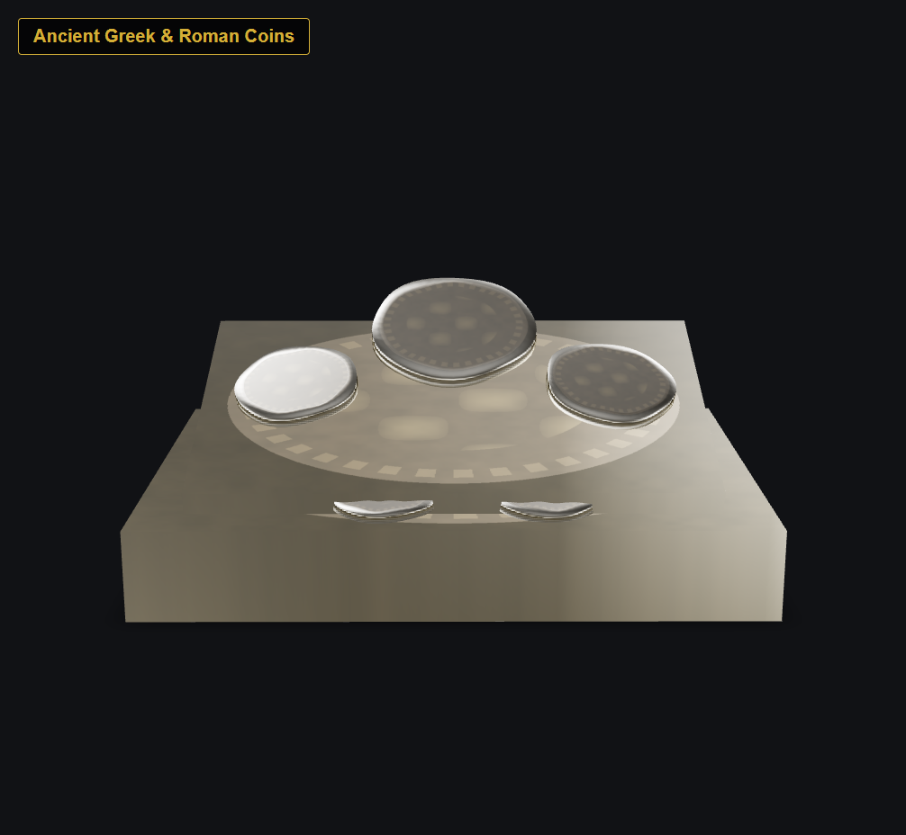
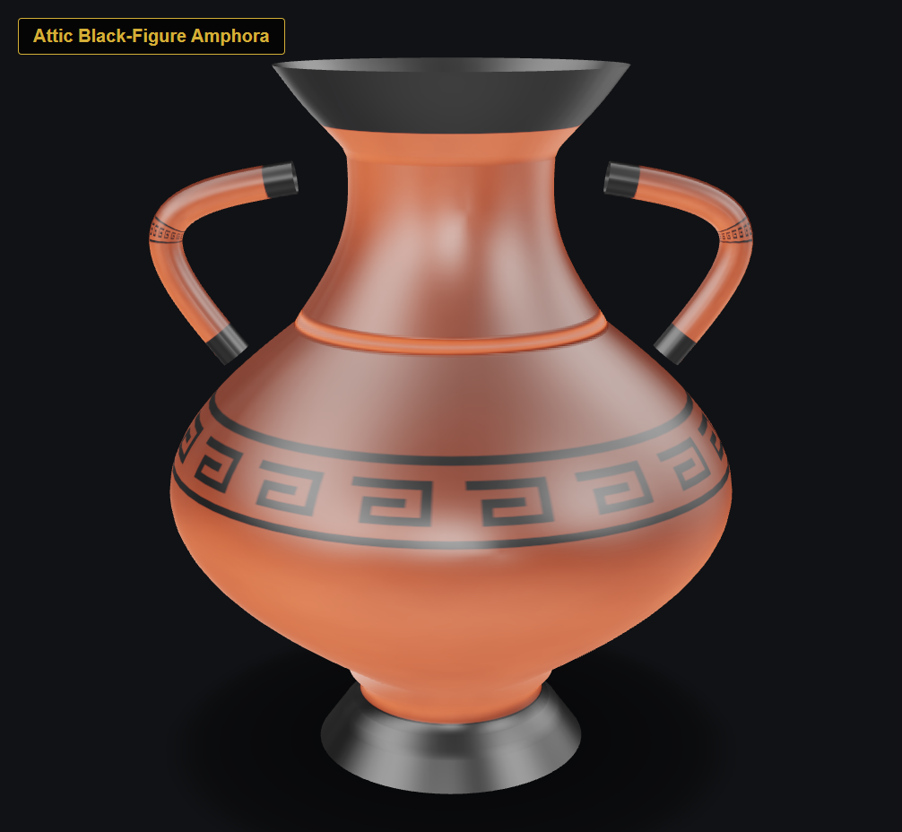
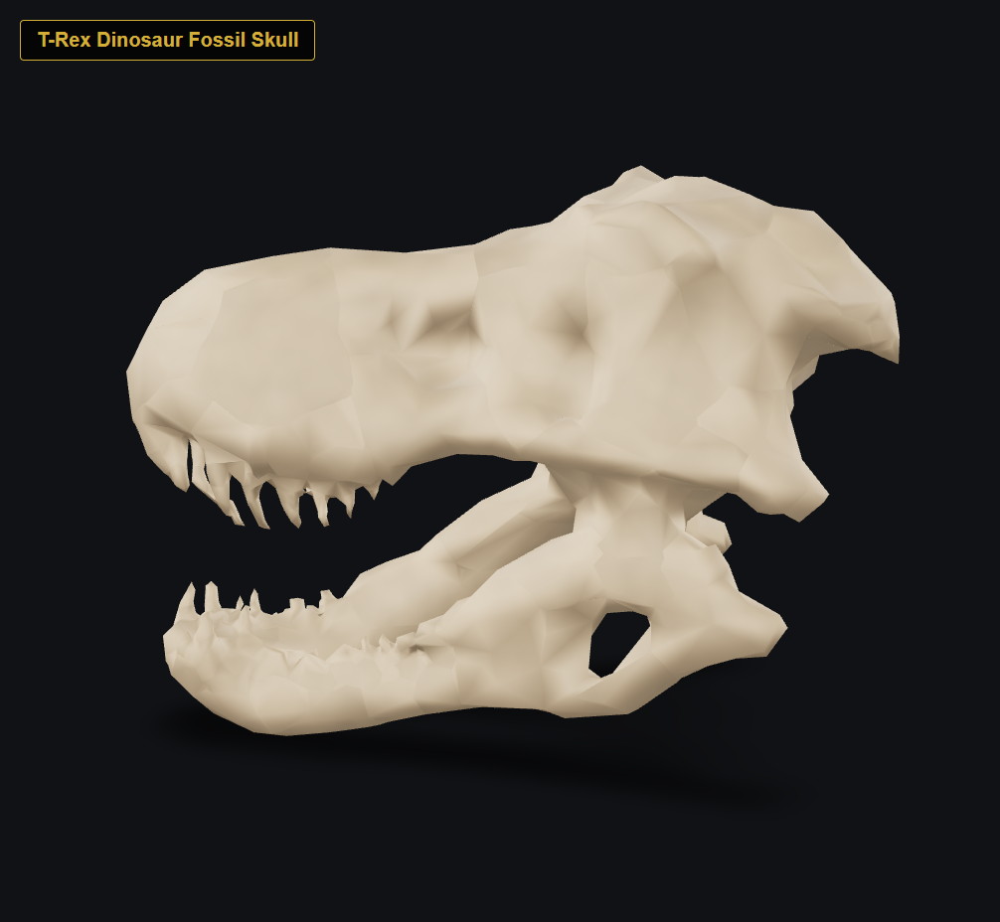
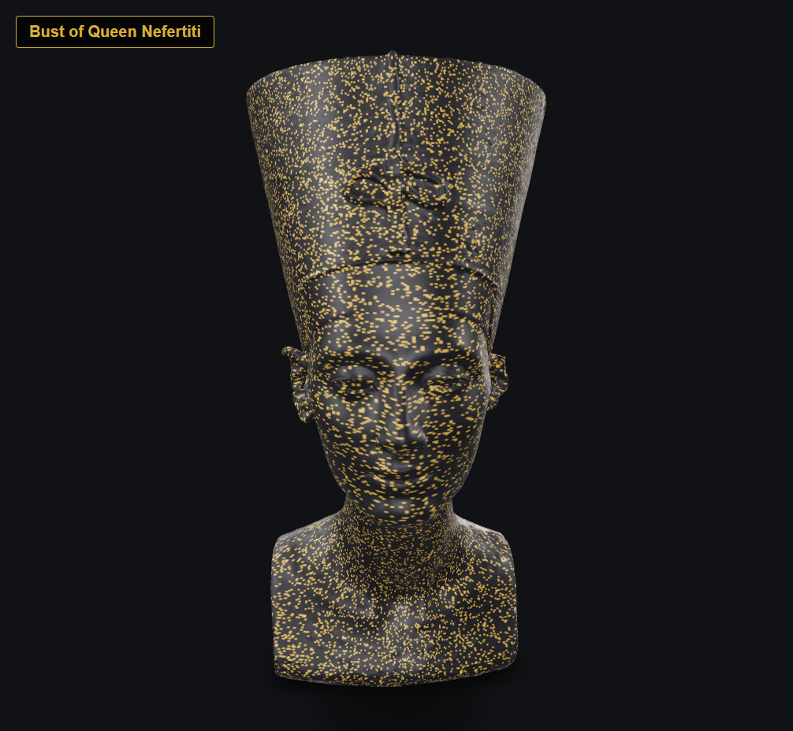
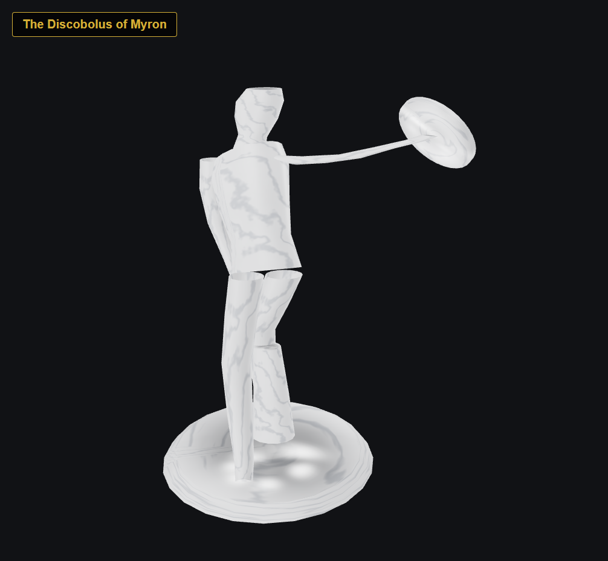

Step into the past with cutting-edge WebAR. Inspect classical antiquity masterpieces, ancient pottery, and apex predator fossils anchored directly onto your table or floor with real-world proportions.
Select any exhibit below to load its 3D model and view its historical curatorial essay.

Exhibit 01Athenian silver tetradrachms and Augustan imperial aurei minted during classical antiquity.

Exhibit 02Ceramic vessel with Greek geometric meander motifs and mythological black slip artwork.

Exhibit 03Hell Creek cranial fossil with 30cm serrated dentition and bone-crushing jaw fenestrae.

Exhibit 04Amarna royal portrait bust with iconic tall khepresh crown and naturalistic facial symmetry.

Exhibit 05Classical Greek sculpture embodying rhythmic equilibrium, athletic tension, and physical mastery.
Powered by Google Play Services for AR (ARCore) and Google Scene Viewer. Supported Chrome and Android browser visitors can place artifacts with surface tracking and automatic lighting.
Powered by Apple ARKit & Quick Look in Safari and iOS browsers. Artifacts render seamlessly in real-world space with true-to-scale dimensional anchoring.
Desktop browsers lack camera-based spatial tracking sensors. However, desktop visitors enjoy the Interactive 3D Turntable with full 360° pan, pitch, and zoom inspection.